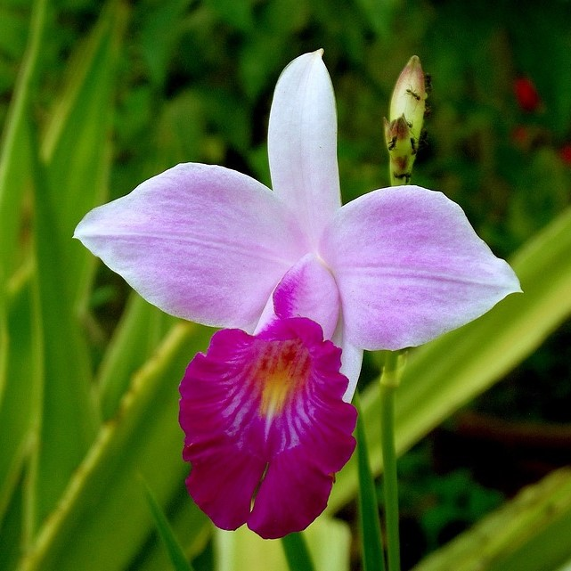

<DOCTYPE html>
  <html lang="en">

  <head>
    <meta charset="UTF-8">
    <meta name="viewport" content="width=device-width, initial-scale=1.0">
    <title>Orquidea Bamboo</title>
    <link href="infoorquidea.css" type="text/css" rel="stylesheet" />
  </head>

  <body>
    <main class="principal">

      <nav id="menu">
        <ul>
          <li><a href="/docs/Codigo Fonte/Home Page/index.html">Início</a></li>
          <li><a href="/docs/Codigo Fonte/Catálogo/catalogo.HTML">Catálogo</a></li>
          <li><a href="/docs/Codigo Fonte/Fórum/forum.html">Fórum</a></li>
          <li><a href="/docs/Codigo Fonte/cadastro/login.html">Login</a></li>

        </ul>
      </nav>
      <div class="conteudoeforum">
        <section class="conteudo"> <!--conteudo do site-->
          <p id="nomeOrquidea">Orquidea Bamboo</p>

          <div class="coluna">
            <div class="imagemelink">
              <a title="Orquídea_Bambo">
                

              </a>


              <aside>
                <p><span><strong>Arundina</strong> é um género botânico pertencente à família das orquídeas
                    (Orchidaceae). Possui uma única espécie, a orquídea bambu (Arundina graminifolia).
                    É uma orquídea terrestre multi perene com caule juncoso, formando grandes massas que crescem até uma
                    altura de 70 cm a 2 m.
                    As folhas finas, estreitas e compridas, são lanceoladas, com um comprimento de 9 a 19 cm e largura
                    de 0,8 a 1,5 cm. A sua extremidade é aguçada.
                    <br><br><strong>Originarias:</strong> Ásia tropical, estende-se desde a Índia, o Nepal, a Tailândia,
                    a Malásia, Singapura, China setentrional até à Indonésia e pelas ilhas do Pacífico. Foi introduzida
                    em Puerto Rico, Costa Rica e Panamá.
                    <br><br><strong> Como cuidar:</strong> Irrigar 3 dias, não deixar água acumulada, colocar em janela,
                    varanda ou em baixo de uma árvore, não deixar o sol incidir diretamente entre das 12h até 16h,
                    adubar a cada 30 dias com adubo químico para plantas de vaso. Cortar a haste de flores quando elas
                    caírem.</span></p>
              </aside>
        </section>
        <section class="forumbanner">
          <p>Acesse o fórum</p>
          <button class="btn-1 ">Acessar</button>
        </section>
      </div>
    </main>
  </body>
  <footer>

    <div class="sobre">
      <p><b>Quem Somos nós:</b>Somos apaixonados por orquídeas.
        No coração do nosso site, cultivamos mais do que flores; cultivamos uma
        comunidade de amantes e entusiastas dessas belas plantas. Nossa missão é compartilhar
        conhecimento, inspiração e cuidados especializados para que todos possam desfrutar do encanto das
        orquídeas em
        suas vidas.</p>
    </div>
  </footer>

  </html>